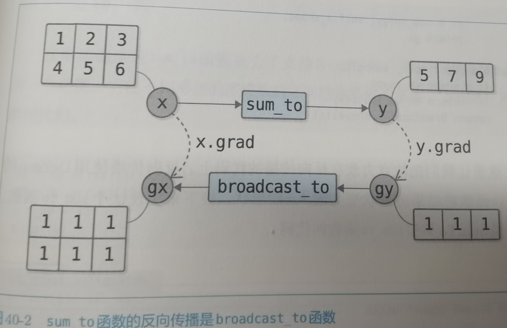

40.进行广播的函数
40.1 broadcast_to函数和sum_to函数
Numpy的行和列
执行的逻辑是通过复制数据改变形状,然后反向传播回去每个元素因为复制了一份,都传播了两次,梯度累加起来就变成了2,broadcast_to函数的反向传播会求梯度的和,以使梯度的形状变为输入x的形状.
其中我们用到了一个sum_to函数,需要求x的元素之和,然后改变形状.
sum_to函数的反向传播就是broadcast_to函数

40.2 Dezero的broadcast_to函数和sum_to函数
broadcast_to
sum_to
40.3 支持广播
Add
Mul
Sub
Div
问题解决
问题解决:
现在出现问题在utils的sum_to函数报错,但是不一定是sum_to函数错了,可能是调用他的函数传递参数错误.
总结:发现问题之后,首先通过打印的方式来一个一个判断,报错提示的是len()里面是NoneType,所以首先就测试了x0和x1的shape,发现是有值的,那么就往前走,看看是不是Sum_To函数的问题,然后就发现在backward里面调用utils.sum_to(x,self.shape)里面的shape构造函数那里没有赋值,所以确实传递的是空对象.
修复后结果符合预期